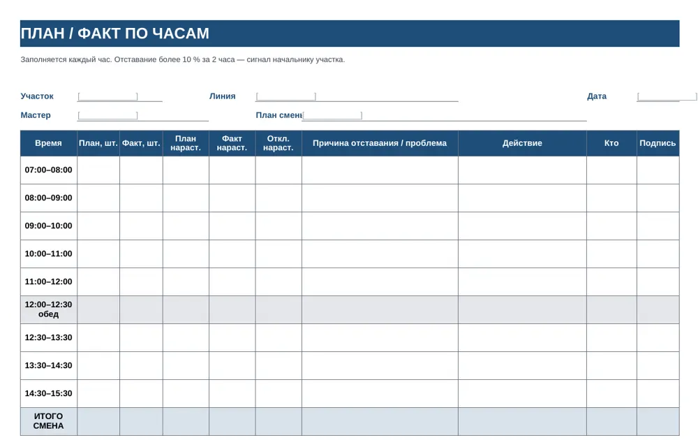

Plant Performance / Документы завода
Готовая база регламентов
Система документов завода
Более 100 связанных документов, по которым завод работает с первого дня: от аудита и плана ввода до технологических карт, инструкций ОТК и управленческой отчётности. Файлы Word и Excel и готовые формы PDF для печати.
Готовы два комплекта: для завода железобетонных изделий и для производства накопительных водонагревателей.
Запуск нового завода
Монтаж закончен, идёт пусконаладка, команды ещё нет. Комплект даёт порядок работ на год и готовые документы к каждому этапу.
- План ввода: 6 этапов, 4 вехи, ответственные и сроки
- Документы выпускаются пакетами — к моменту, когда они нужны
- К старту серии уже работают бюджет, регламенты и контроль качества
Порядок на действующем
Завод работает, но план не выполняется, брак растёт, решения держатся на людях. Начинать стоит с аудита, а документы брать только те, которых не хватает.
- Чек-лист на 152 вопроса по 12 областям с оценкой зрелости от 0 до 4
- Тепловая карта и список разрывов по приоритету
- План на 100 дней и реестр недостающих документов
Что входит
Разделы реестра и число документов в каждом — на примере комплекта для завода ЖБИ. Комплект для водонагревателей устроен так же, с технологией и контролем своей отрасли.
| Раздел | Документов | Что внутри |
|---|---|---|
| Технология | 36 | технологические карты и стандарты рабочих мест, карта технологических режимов, 5S и визуальное управление |
| Качество | 28 | руководство по качеству, входной, операционный и лабораторный контроль, приёмка, 8D, FMEA, поставщики, риски, внутренние аудиты |
| Процессы | 9 | S&OP, сменно-суточное планирование, склад и инвентаризация, отгрузка, претензии заказчиков, управление изменениями, НСИ |
| Стратегия и отчётность | 9 | план ввода, справочник KPI, формы управленческой отчётности, дашборд KPI завода |
| Организация | 8 | полномочия и право подписи, регламент совещаний, положения о подразделениях, должностные инструкции, RACI |
| Финансы | 7 | БДР и БДДС, платёжный календарь, нормативная себестоимость и BOM, методика расчёта себестоимости, CAPEX |
| Персонал | 5 | штатное расписание и график найма, компетенции и обучение, адаптация, аттестация |
| ТОиР и ИТ | 6 | регламент ТОиР, реестр оборудования, график ППР и поверки СИ, ТЗ на ERP, документооборот, информационная безопасность |
Как выглядят документы
У каждого документа есть код, версия, владелец и срок пересмотра. Документы ссылаются друг на друга, поэтому комплект работает как система, а не как папка файлов.



Документы выпускаются пакетами по плану ввода
Каждый пакет привязан к этапу, когда он действительно нужен.
- Первые две неделиАудит и план вводаЧек-лист аудита, запрос данных службам, план ввода завода с целями на 12 месяцев.
- Месяцы 1–2Приоритетный пакетПолномочия и право подписи, регламент совещаний, штатное расписание, справочник KPI, управленческая отчётность, платёжный календарь.
- Месяцы 3–4Качество, деньги, оборудованиеРуководство по качеству, закупки, бюджетирование, ТОиР и ППР, S&OP, управление изменениями, FMEA, нормативная себестоимость.
- Месяцы 5–7Серийное производствоСклад и инвентаризация, отгрузка, претензии и 8D, сменно-суточное планирование, НСИ, компетенции и обучение, дашборд KPI.
- Завершающий этапЗакреплениеДокументооборот, аттестация, ТЗ на ERP, карта технологических режимов, реестр документов завода.
- ПараллельноПроизводство и ОТКТехнологические карты и стандарты рабочих мест, инструкции ОТК, формы, доски участков, чек-листы операторов и ТО — готовые к печати.
Нормы, режимы и составы в полях [ ] вносит технолог завода по рабочим чертежам, паспортам оборудования и ГОСТ.
Скачать
Презентация и шесть документов из комплектов целиком, без регистрации. По ним видно, как документы устроены и насколько подробны.
Программы
- Презентация Plant PerformancePDF, 9 слайдов: обе программы и комплекты документовСкачать PDF
- Ролик «Завод в цифрах»MP4, 50 секунд, титры на экранеСкачать MP4
- Ролик «ИИ-ассистент: P&L и риски»MP4, 51 секунда, условные данныеСкачать MP4
- Ролик «ИИ-ассистент: отчёт для директора»MP4, 93 секунды, условные данныеСкачать MP4
Документы: завод ЖБИ
- Технологическая карта ТК-ТВО-01Тепловлажностная обработка изделий в камерах · PDF, 5 страницСкачать PDF
- Инструкция ОТК ИК-ОК-03Контроль прочности бетона · PDFСкачать PDF
- Чек-листы операторов на сменуФормы для печати A4 · PDFСкачать PDF
Документы: завод водонагревателей
- Технологическая карта ТК-ЭМ-02Обжиг эмали · PDF, 5 страницСкачать PDF
- Инструкция ОТК ИК-ОК-03Контроль эмалевого покрытия · PDFСкачать PDF
- Доски участковПлан и факт по часам, формы для печати A3 · PDFСкачать PDF
Напишите нам
Расскажите в двух строках, что за завод и что хотите посмотреть. Ответим, покажем программу в работе и пришлём документы, которых нет на сайте.